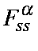
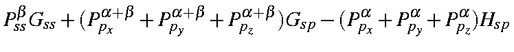
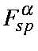
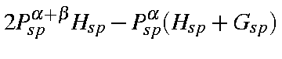
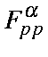
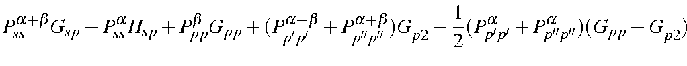
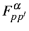
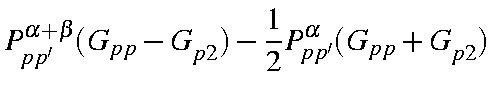

For each atom there are a maximum of five one-center two-electron integrals. These are <ss|ss>, <ss|pp>, <sp|sp>, <pp|pp>, and <pp|p'p'>, where p and p' are two different p-type atomic orbitals. In the original formulation [55] there was a sixth integral, <pp'|pp'>, but it can be shown that this integral is related to two of the other integrals by:
<pp|p'p'> = 1/2( <pp|pp>
- <pp|p'p'>)
R(45o)px = 0.7071(px + py)
R(45o)py = 0.7071(py - px)
R(45o)<pxpy|pxpy> = 1/4<(px + py)(py - px)|(px + py)(py - px)>
= 1/4(<px px|px px> + <py py|py py> - <px px|py py> - <py py|px px>)
R(45o)<pxpy|pxpy> = 1/2(<px px|px px> - <py py|px px>)
<ss|ss> = Gss
<pp|pp> = Gpp
<sp|sp> = Hsp
<pp|pp> = Gpp
<pp|p'p'> = Gp2
|  | : |  | |
|  | : |  | |
|  | : |  | |
|  | : |  |